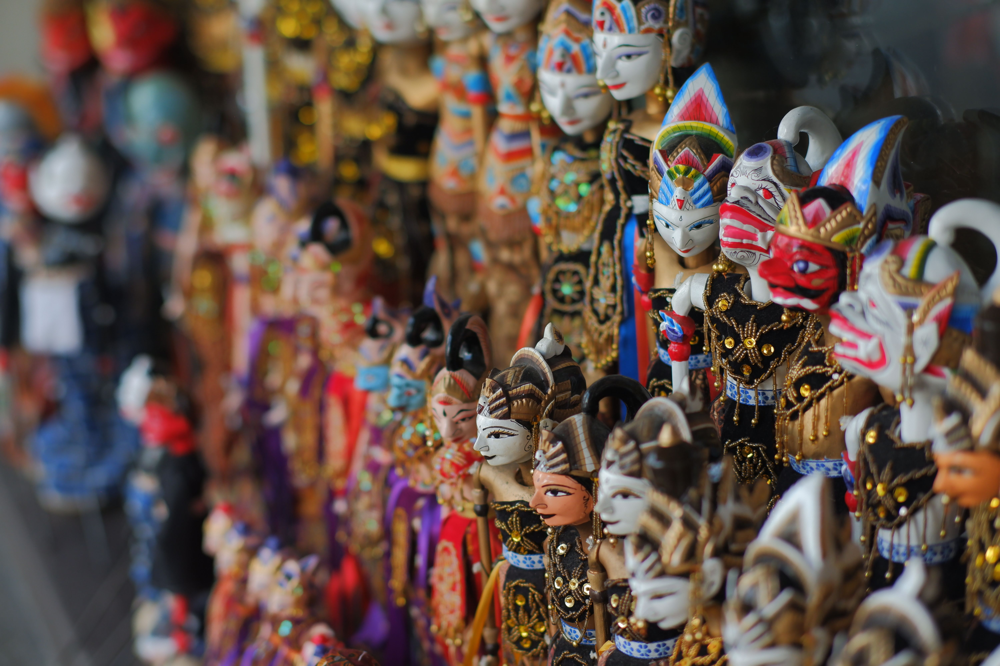
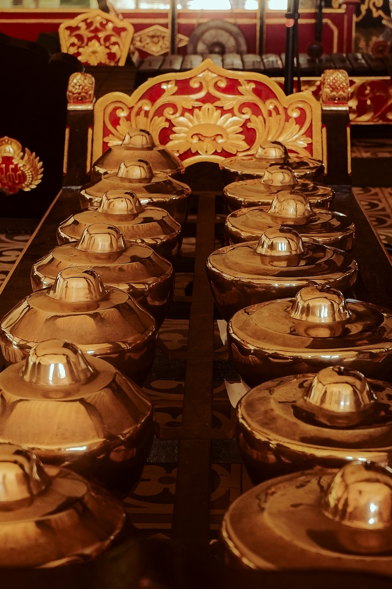
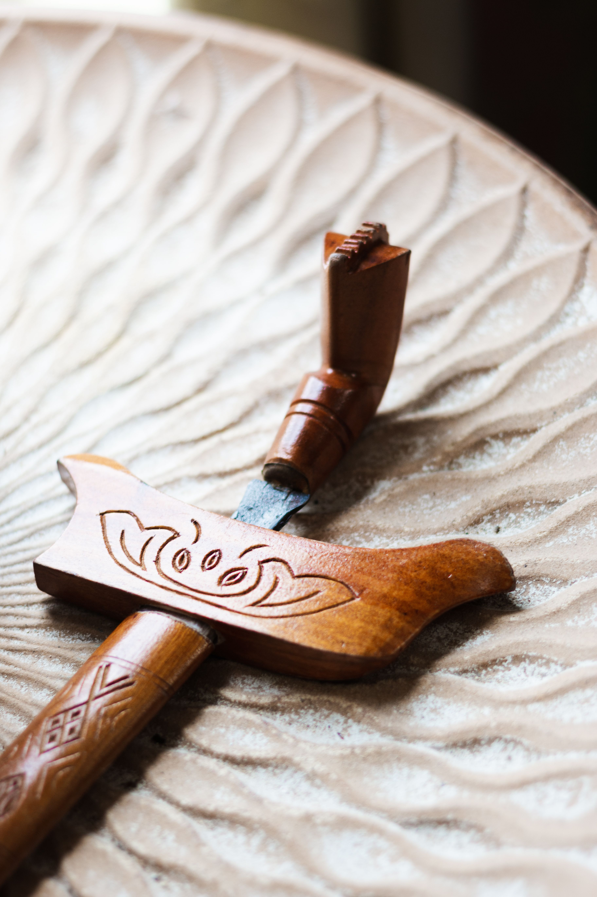

❖ BUDAYA JAWA ❖
❖ ❈ ❖

🎭 Wayang Kulit
Wayang Kulit merupakan seni pertunjukan tradisional Jawa yang telah diakui UNESCO sebagai Warisan Budaya Dunia. Cerita yang dibawakan umumnya berasal dari Ramayana dan Mahabharata.
"Wayang adalah cermin kehidupan manusia."

🎵 Gamelan Jawa
Gamelan merupakan alat musik tradisional Jawa yang dimainkan secara bersama-sama dan melambangkan kebersamaan, keharmonisan, serta keseimbangan dalam kehidupan masyarakat Jawa.
"Alunan gamelan menyatukan irama dan jiwa."

👘 Batik Jawa
Batik merupakan karya seni warisan budaya Indonesia yang setiap motifnya memiliki makna dan pesan kehidupan yang diwariskan secara turun-temurun.
"Setiap goresan batik menyimpan cerita kehidupan."

🗡️ Keris Jawa
Keris merupakan senjata tradisional yang menjadi simbol kehormatan, keberanian, dan kebijaksanaan masyarakat Jawa serta mengandung nilai filosofis yang mendalam.
"Keris bukan sekadar pusaka, tetapi lambang kehormatan."